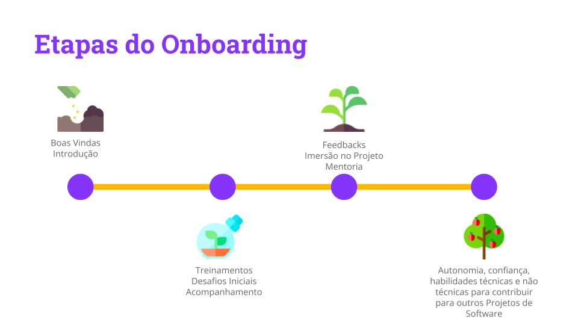

Processo de Onboarding - Princípios básicos
Ideia Principal
O principal foco do Onboarding é guiar novos desenvolvedores na adoção de práticas e cultura organizacionais, além da mentoria/liderança serem crucial para o compartilhamento.
Quando engenheiros de software são contratados por uma empresa, eles precisam passar por um período de adaptação para se ajustarem à cultura, práticas, processos e ferramentas da organização. Esse período de adaptação técnica e cultural pode durar meses e é geralmente considerado um período improdutivo, uma vez que a ênfase é no aprendizado de uma nova maneira de trabalhar.
Durante esse período, os novos colaboradores (newcomers) podem enfrentar várias barreiras ao serem incorporados em um novo projeto de desenvolvimento de software, incluindo:
- Barreiras pessoais, que incluem a relutância dos recém-chegados em pedir ajuda a seus colegas no início de seus processos de resolução de problemas por medo de perder tempo
- Barreiras interpessoais, que, por exemplo, referem-se a problemas de comunicação que surgem quando os recém-chegados são incorporados a uma equipe diversificada, no qual pessoas diferentes com objetivos diferentes, culturas diferentes e habilidades interpessoais diferentes se reúnem
- Barreiras de processo, onde os recém-chegados encontram dificuldades em ter uma perspectiva holística do software para o qual estão contribuindo e em descobrir por onde começar a trabalhar
- Barreiras técnicas, os recém-chegados frequentemente encontram problemas devido à alta complexidade dos sistemas que estão sendo desenvolvidos. Este problema é acompanhado pela falta de conhecimento prévio do domínio onde ocorre o desenvolvimento
Quando novos engenheiros de software são incorporados a uma equipe, eles precisam passar por um processo de adaptação que pode ser desafiador. Essas barreiras podem resultar em atrasos no projeto e aumento nos custos, já que a incorporação de novos desenvolvedores pode levar mais tempo para a conclusão de tarefas importantes. Além disso, a qualidade do software desenvolvido pode ser comprometida, uma vez que os recém-chegados podem cometer erros ou não seguir as melhores práticas adotadas pela equipe.
Quando novos engenheiros de software são incorporados a uma equipe, eles precisam passar por um processo de adaptação que pode ser desafiador. Essas barreiras podem resultar em atrasos no projeto e aumento nos custos, já que a incorporação de novos desenvolvedores pode levar mais tempo para a conclusão de tarefas importantes. Além disso, a qualidade do software desenvolvido pode ser comprometida, uma vez que os recém-chegados podem cometer erros ou não seguir as melhores práticas adotadas pela equipe.
Para superar essas barreiras, é fundamental implementar estratégias eficazes de Onboarding, ou integração, de novos colaboradores (newcomers). O onboarding é o processo de incorporar novos desenvolvedores em uma equipe de software, que inclui o uso de ferramentas e tecnologias para facilitar a comunicação e a colaboração entre a equipe. Isso também inclui a criação de um ambiente de trabalho acolhedor e inclusivo que incentiva os recém-chegados a pedir ajuda e compartilhar conhecimento, além da implementação de treinamentos e orientações adequados para ajudar os novos desenvolvedores a compreender melhor o processo de desenvolvimento e os sistemas em que estão trabalhando.
Para que o processo de onboarding seja eficaz, é importante que a empresa tenha uma cultura de integração, processos bem definidos e ferramentas adequadas para apoiar a atividade. Os processos bem definidos estabelecem o que deve ser feito em cada etapa do onboarding, enquanto as ferramentas incluem desde sistemas de gestão de aprendizagem até manuais e guias que ajudam os novos colaboradores a se orientarem na empresa.
Em produtos de software, o onboarding de novos colaboradores pode ser ainda mais complexo, pois as equipes trabalham em sistemas complexos e altamente personalizáveis. Os novos desenvolvedores precisam entender os diferentes componentes e variantes dos produtos, bem como as práticas e convenções de desenvolvimento específicas da equipe. Esse processo pode levar várias semanas ou até meses, o que pode ter um impacto significativo na produtividade da equipe e na qualidade do software produzido. Por isso, é importante que as equipes contem com a ajuda de mentorias, onde os desenvolvedores mais experientes trabalham em estreita colaboração com os novos membros da equipe para ajudá-los a se adaptarem ao novo ambiente de trabalho.
O processo de onboarding pode variar de acordo com a empresa, mas geralmente envolve as seguintes etapas:
- Boas-vindas: Nesta etapa, o novo colaborador é recebido pela equipe e apresentado à empresa, incluindo a missão, visão e valores.
- Introdução: O novo colaborador recebe informações sobre a cultura e os processos da empresa, além de conhecer os colegas de trabalho.
- Treinamento: O novo colaborador recebe o treinamento necessário para desempenhar suas funções.
- Desafios iniciais: O novo colaborador recebe tarefas e projetos menores para se adaptar gradualmente ao ambiente de trabalho e ganhar confiança.
- Feedback: É importante que a empresa ofereça um feedback constante para o novo colaborador sobre seu desempenho e orientações sobre como melhorar.
- Acompanhamento: Durante as primeiras semanas, é importante que o novo colaborador receba um acompanhamento para esclarecer dúvidas e orientá-lo sobre as expectativas da empresa.
- Imersão no projeto: O novo colaborador é apresentado ao projeto ou equipe em que irá trabalhar e recebe informações sobre a metodologia de trabalho e as ferramentas utilizadas.
- Integração contínua: O processo de onboarding não deve se limitar às primeiras semanas de trabalho, mas deve ser um processo contínuo de integração do novo colaborador à equipe e à cultura da empresa.

Saiba mais sobre Onboarding
Caso você tenha interesse em aprofundar seus conhecimentos Onboarding, seguem abaixo algumas referências úteis: